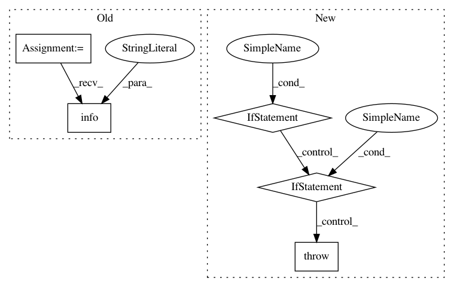

2d34259281a6251cbdc67103ce8a1310010b8ceb,orbit/controller.py,Controller,__init__,#Controller#Any#Any#Any#Any#Any#Any#Any#Any#Any#,39
Before Change
checkpoint_interval = self.checkpoint_manager.checkpoint_interval
restored_path = self.restore_checkpoint()
if restored_path:
logging.info("Restored from checkpoint: %s", restored_path)
def train(self, steps: int, checkpoint_at_completion: bool = True):
Runs training.
After Change
f"`summary interval` ({summary_interval}) must be a multiple "
f"of `steps_per_loop` ({steps_per_loop}).")
if global_step is None:
raise ValueError("`global_step` is required.")
elif not isinstance(global_step, tf.Variable):
raise ValueError("`global_step` must be a `tf.Variable`.")
self.trainer = trainer
self.evaluator = evaluator
self.strategy = strategy or tf.distribute.get_strategy()
In pattern: SUPERPATTERN
Frequency: 3
Non-data size: 5
Instances
Project Name: tensorflow/models
Commit Name: 2d34259281a6251cbdc67103ce8a1310010b8ceb
Time: 2020-10-05
Author: dhr@google.com
File Name: orbit/controller.py
Class Name: Controller
Method Name: __init__
Project Name: Microsoft/nni
Commit Name: 5af01545fce906a682f44741b4f6b6bd2b1d2585
Time: 2019-05-15
Author: zhulifei@riseup.net
File Name: src/sdk/pynni/nni/hyperopt_tuner/hyperopt_tuner.py
Class Name:
Method Name: json2parameter
Project Name: Microsoft/nni
Commit Name: 5af01545fce906a682f44741b4f6b6bd2b1d2585
Time: 2019-05-15
Author: zhulifei@riseup.net
File Name: src/sdk/pynni/nni/hyperopt_tuner/hyperopt_tuner.py
Class Name:
Method Name: json2space